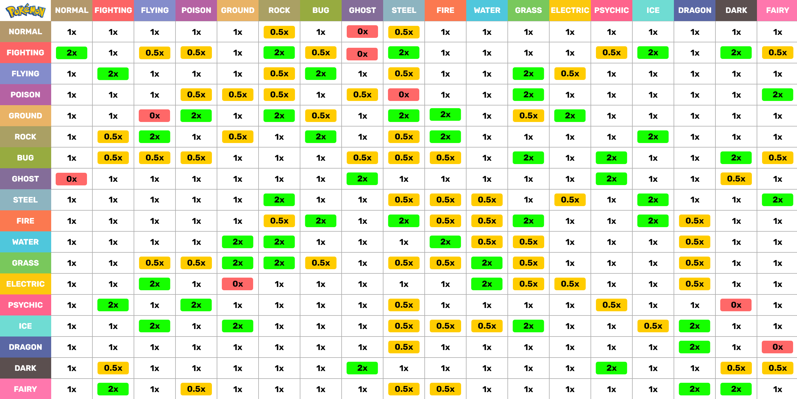

para adicionar uma imagem use a tag img src (a parte alt da tag serve para voce descrever a imagem que está sendo exibida)
para escolher o tamanho da imagem adicione junto a tag os complementos width e height (lembrando imagens na programação são medidas em pixeis)
para usar uma imagem em seu site deve ser atento em relação aos direitos autorais então use o site pexels para achar imagens liberadas para uso site
um site bom para pegar icones e o site flaticon
deve se usar um image map quando voce quiser que quando a pessoa clique em uma imagem va para um link para isso acesse o site image map
para fazer isso use a tag a de link e deixe dentro dela a tag img
